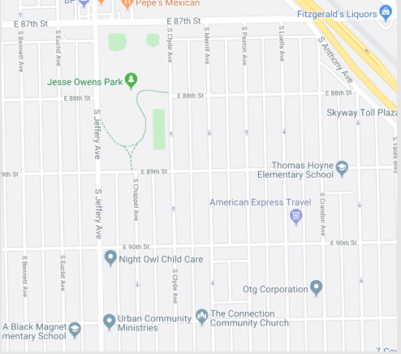

Washington/State

Selected Route
Eastbound
60 - Randolph/Harbor Dr.
Every 20 minutes
7:40am, 8:00am, 8:20am
Other Schedule
Eastbound
124 - Navy Pier
Every 10 min
7:25am, 7:35am, 7:45am
Northbound
151 - Devon/Clark
Every 16 min
7:30am, 7:46am, 8:02am
Southbound
J14 - 103rd/Stony Island
Every 15 mins
7:30am, 7:45am, 8:00am
124 Navy Pier
Every 10 mins
7:30am, 7:40am, 7:50am
Reroute
6x - Jackson Park Express
N/A
Out of Service
4 - Cottage Grove
Resumes 12:10am
20 Madison
Resumes 12:10am
157 - Streeterville/Taylor
Resumes 6:00am